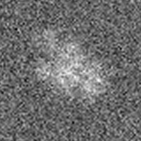
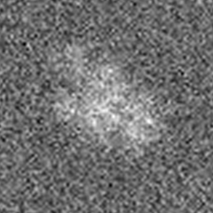

最小
最大
平均値
標準偏差
標準誤差
-65.0178
94.4699
4.85274
20.4635
0.255794
| オプション | 必須項目/選択項目 | NULL | デフォルト |
|---|---|---|---|
| -i | 必須 | 入力ファイル設定 | NULL |
| -o | 必須 | 出力ファイル設定 | NULL |
| -r | 必須 | 比率の設定 | 0 |
| -m | 選択 | モード | 0 |
| -h | 選択 | ヘルプを表示 |
| モード | 説明 |
|---|---|
| 0 | 両方の軸 |
| 2 | mrcのヘッダーを変える |
| 16 | 参照イメージ |
|
最小 |
-65.0178 |
|  | 最小 |
-66.3313 |
|  | 最小 |
-69.2405 |
最小 |
-66.3313 |
最小 |
-36.8299 |